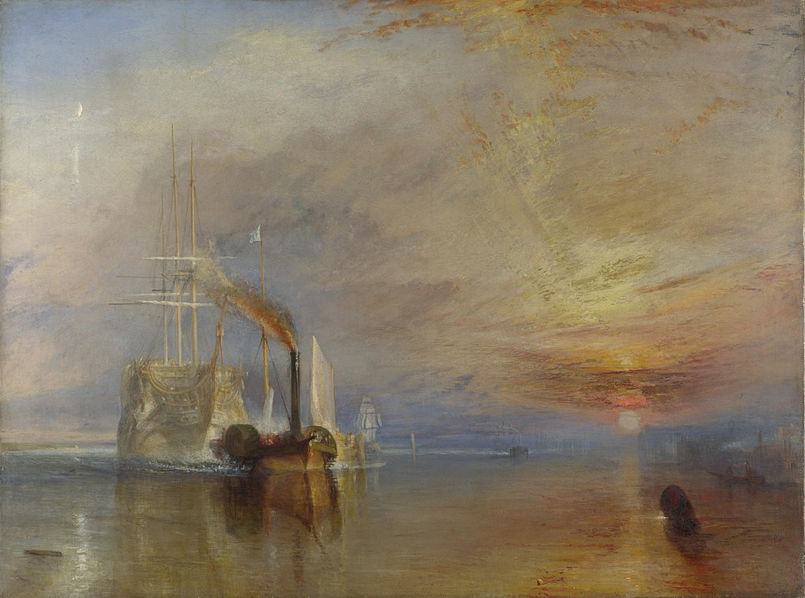

<head>
<meta charset="UTF-8" />
<meta name="keywords" content="drawing, painting" />
<meta name="description" content="drawings by Sunjy" />
<title>Sunjy</title>
<link rel="shortcut icon" type="image/x-icon" href="../../mImages/mCommon/favicon.ico" media="screen" />
<link rel="stylesheet" type="text/css" href="../../mCsses/mCommon/mCssA.css" />
<link rel="stylesheet" type="text/css" href="../../mCsses/mCommon/mCssB.css" />
<link rel="stylesheet" type="text/css" href="../../mCsses/mCommon/mCssC.css" />
<link rel="stylesheet" type="text/css" href="../../mCsses/mCommon/mCssD.css" />
<link rel="stylesheet" type="text/css" href="../../mCsses/mContent/mCssA.css" />
<link rel="stylesheet" type="text/css" href="../../mCsses/mContent/mCssB.css" />
<link rel="stylesheet" type="text/css" href="../../mCsses/mContent/mCssC.css" />
<link rel="stylesheet" type="text/css" href="../../mCsses/mContent/mCssD.css" />
</head>
<script type="text/javascript" src="../../mScripts/mContent/mContentAA.js" /></script>
<script type="text/javascript" src="../../mScripts/mContent/mContentAB.js" /></script>
<script type="text/javascript" src="../../mScripts/mContent/mContentAC.js" /></script>
<script type="text/javascript" src="../../mScripts/mContent/mContentAD.js" /></script>
<script type="text/javascript"></script> 
<script type="text/javascript">
document.write('<div class="mImgAbsolute"></div>');
/*
document.write('<p class="mFontSizeBColor" />From a white paper...</p>');
document.write('<table class="center"><tr><td>');
document.write('');
document.write('</td></tr></table>');
*/
</script>


<script type="text/javascript">
document.write('<p class="mFontSizeBColor" />The Fighting Temeraire</p>');
document.write('<p class="mFontSizeSColor" />The Fighting Temeraire is an oil painting by the English artist Joseph Mallord William Turner. The painting depicts the HMS Temeraire, a battle-aged and decommissioned gunship being towed by a paddle-wheel steam tug to her last berth in 1838 to be broken up for scrap. <br><br>This painting was an immediate success for Turner, with the critics and the public, but he never sold it. Turner refused offers to buy the painting, having determined to leave it to the nation. He called this work his “darling.”<br><br>The HMS Temeraire played a distinguished role in Nelson’s victory at the Battle of Trafalgar in 1805 and thus became a celebrated gunship known as the ‘Fighting Temeraire.’<br><br>The 98-gun ship was one of the critical vessels that took part in the Battle of Trafalgar at which the British decisively destroyed the Napoleonic naval threat.<br><br>Britain was bracing itself for invasion by Napoleon, who had brought together fleets from France and Spain, to neutralize the British navy.<br><br>Success at the Battle of Trafalgar sowed the seeds of the colonial power that was to follow the British victory over Napoleon.<br><br>Thirty-three years after her best-known battle, the ‘Temeraire’ was decaying and no longer in use, and her last voyage was to be towed up the Thames to be broken up at a south-east London shipyard. <br><br>This composition depicts a glorious sunset, through which sails a short, dark tugboat, pulling a ghostly sailing ship.<br><br>Now the sunset breezes shiver<br>Temeraire! Temeraire!<br>And she’s fading down the river.<br>Temeraire! Temeraire!<br>Now the sunset Breezes shiver<br>And she’s fading down the river,<br>But in England’s song forever<br>She’s the Fighting Temeraire.<br><br>By Henry Newbolt, ‘The Fighting Temeraire’, 1898<br><br>J. M. W. Turner was eighteen years old when Britain entered the Napoleonic Wars, and he, like the nation, was strongly patriotic.<br><br>The Temeraire was a famous ship from her heroic acts at Trafalgar, and her sale by the British Admiralty and later scrapping attracted much press coverage. This painting had a symbolic meaning for Turner and his audience.<br><br>It was immediately appreciated for its symbolism and the atmospheric style used by Turner to explored the interplay of the water and the effects of the setting sun.<br><br>Many of Turner’s paintings can be found in museums across the world, depict famous landscapes and seascapes.<br></p>');
document.write('<table class="center" /><tr><td>');
document.write('<br>This painting was an immediate success for Turner, with the critics and the public, but he never sold it. Turner refused offers to buy the painting, having determined to leave it to the nation. He called this work his “darling.”<br><br>The HMS Temeraire played a distinguished role in Nelson’s victory at the Battle of Trafalgar in 1805 and thus became a celebrated gunship known as the ‘Fighting Temeraire.’<br><br>The 98-gun ship was one of the critical vessels that took part in the Battle of Trafalgar at which the British decisively destroyed the Napoleonic naval threat.<br><br>Britain was bracing itself for invasion by Napoleon, who had brought together fleets from France and Spain, to neutralize the British navy.<br><br>Success at the Battle of Trafalgar sowed the seeds of the colonial power that was to follow the British victory over Napoleon.<br><br>Thirty-three years after her best-known battle, the ‘Temeraire’ was decaying and no longer in use, and her last voyage was to be towed up the Thames to be broken up at a south-east London shipyard. <br><br>This composition depicts a glorious sunset, through which sails a short, dark tugboat, pulling a ghostly sailing ship.<br><br>Now the sunset breezes shiver<br>Temeraire! Temeraire!<br>And she’s fading down the river.<br>Temeraire! Temeraire!<br>Now the sunset Breezes shiver<br>And she’s fading down the river,<br>But in England’s song forever<br>She’s the Fighting Temeraire.<br><br>By Henry Newbolt, ‘The Fighting Temeraire’, 1898<br><br>J. M. W. Turner was eighteen years old when Britain entered the Napoleonic Wars, and he, like the nation, was strongly patriotic.<br><br>The Temeraire was a famous ship from her heroic acts at Trafalgar, and her sale by the British Admiralty and later scrapping attracted much press coverage. This painting had a symbolic meaning for Turner and his audience.<br><br>It was immediately appreciated for its symbolism and the atmospheric style used by Turner to explored the interplay of the water and the effects of the setting sun.<br><br>Many of Turner’s paintings can be found in museums across the world, depict famous landscapes and seascapes.<br>" />');
document.write('</td></tr></table>');
</script>


